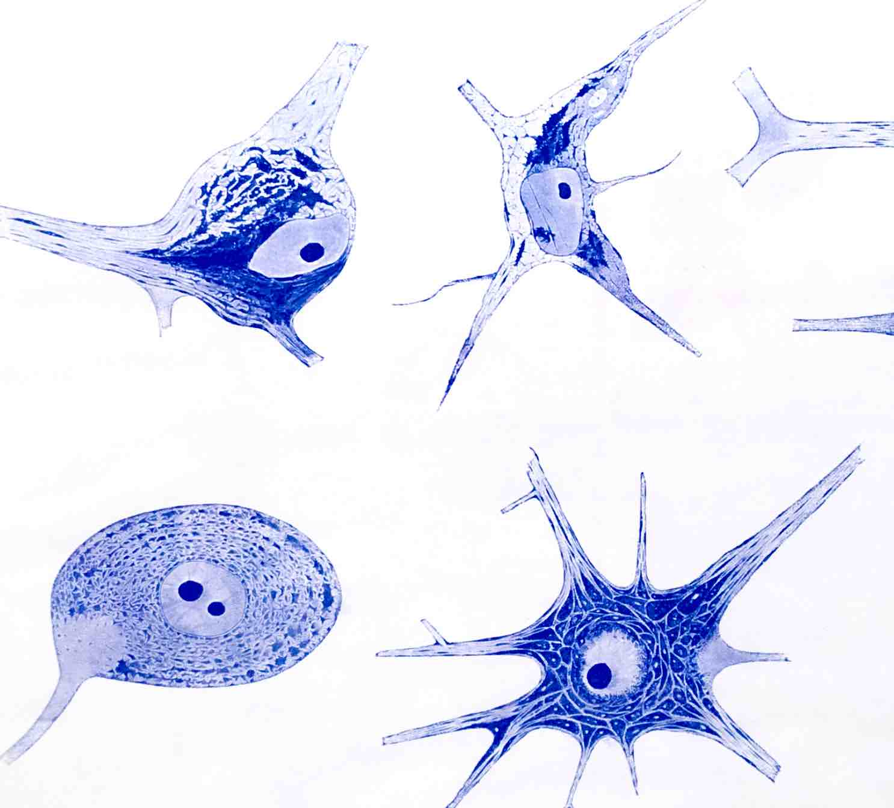

Nerve cells
 The great variety of neuronal morphology demonstrates that in reality there is no prototypical nerve cell. Considering all the different shapes and sizes of motor neurons, sensory or autonomic ganglion cells, Purkinje cells, granule cells, cortical interneurons or pyramidal cells, it is astonishing that they are all built for the same purpose: to receive, process and transmit information by means of bioelectrical signals.
Neurons share all the features of basic metabolism, cytoarchitecture, organelles and functional cell biology with other somatic cells. The usually spherical nucleus shows relatively little heterochromatin and contains one or even two nucleoli. There are mitochondria, lysosomes, Golgi complexes and a rough endoplasmic reticulum (RER) organized in Nissl bodies. Neurons possess an especially elaborate cytoskeleton with microtubules, intermediate filaments and microfilaments used as scaffolds or motors to manage the enormous task of cytoplasmic transport in the axons and the dendrites. This reflects the need to support the unique morphology of neurons which are asymmetrical and polarized to an extent not seen in any other cell.
A sophisticated transport system is needed to supply the axon, which does not have any protein synthesis of its own, and the dendrites. The great variety of molecules needed to sustain information processing at the synapse and along the neuronal membranes may be the reason for another outstanding feature of the nerve cell: the great variety of genes transcribed in neurons.
It is important to realize that neurons change under pathological conditions. This has been investigated most extensively in the motor neurons of the spinal cord and the brainstem after axotomy. Much knowledge on the plasticity of regulatory mechanisms in injured neurons has been gained through studies of the nerve cell body’s response to axonal lesions.
Footnote: Part of this chapter was taken, with permission, from an earlier text by MB Graeber and GW Kreutzberg and is herewith donated to the community.